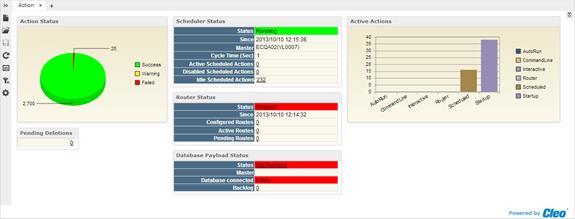

| Cleo Dashboards and Cleo System Monitor / Cleo System Monitor | |
The Action Dashboard provides information related to the various types of actions active within the currently selected VersaLex. It consists of several different components.

The Action Status chart displays a count of the successes, warnings, and failures that have occurred in the past 60 minutes. This is a count of each command within an action rather than the status of the action as a whole.
A growing red section of the pie chart indicates a current problem in the VersaLex actions.
Access the Action Status History sub-report by clicking on the pie chart.
The Action Status History report displays the number of Successful, Warning, and Failed items over time. By default, it will show the last 60 minutes of history. Change the Start date/time of the chart and the number of Minutes displayed using the parameter box. Use the zoom slider at the bottom to zoom in closer to a specific time. Hovering the cursor over a specific data point on the chart will display information about that data point.
The Pending Deletions table displays a count of the number of files pending deletion. If a PUT-DEL command fails to delete a file, it is added to list and attempted to delete at a later time.
This value should be 0. If it is non-zero, then it is likely that another process has files open, preventing VersaLex from deleting the file(s).
Access the Files Pending Deletion sub-report by clicking the underlined number in the table.
The Files Pending Deletion report displays the files that failed to be deleted. These file could be pending deletion due to file permissions or the file being open by another application.
The Scheduler Status table displays the status of the VersaLex Scheduler, when the Scheduler was last started/stopped, which VersaLex is the master Scheduler, and scheduled actions counts.
The first check should be to see if the scheduler is running when it is expected to be running. The master scheduler will normally be the VersaLex with the lowest serial number. If this changes, an issue is indicated with the master scheduler VersaLex. The cycle time is the time it takes to check all the scheduled actions once. This time will vary for each setup. Once a typical cycle time has been determined, you can monitor the cycle time.
Access the Scheduled Action History sub-report by clicking an underlined value in the table.
The Scheduled Action History report displays the number of Active, Disabled, and Idle scheduled actions over time. By default, it will show the last 60 minutes of history. Change the Start date/time of the chart and the number of Minutes displayed using the parameter control box. Use the zoom slider at the bottom to zoom in closer to a specific time. Hovering the cursor over a specific data point on the chart will display information about that data point.
The Router Status table displays the status of the VersaLex Router, when the Router was last started/stopped, and route counts.
The first check should be to see if the router is running when it is expected to be running. You can monitor the pending routes to see how much of a backlog the system has.
Access the Router History sub-report by clicking on an underlined value in the table.
The Router History report displays the number of Configured, Active, and Pending routes over time. By default, it will show the last 60 minutes of history. Change the Start date/time of the chart and the number of Minutes displayed using the parameter control box. Use the zoom slider at the bottom to zoom in closer to a specific time. Hovering the cursor over a specific data point on the chart will display information about that data point.
The Database Payload Status table displays the status of the VersaLex Database Payload system, which VersaLex is the master, whether the database is currently connected, and how many items are in the backlog.
Check to see if the Database Payload is running when it is expected to be running and whether or not the database is connected. You can monitor the database payload backlog to see if it is growing to a number higher than usual.
Access the Database Payload History sub-report by clicking an underlined value in the table.
The Database Payload History report displays the number of backlogged payload items over time. It shows whether the database payload was running (1) or not (0). It also shows whether the database was connected (1) or not (0). By default, it will show the last 60 minutes of history. Change the Start date/time of the chart and the number of Minutes displayed using the parameter control box. Use the zoom slider at the bottom to zoom in closer to a specific time. Hovering the cursor over a specific data point on the chart will display information about that data point.
The Active Actions chart displays a count of the active actions in each Run Type category. This can be monitored and compared against normal levels of the number of actions running at a given time. Abnormally high or low numbers could indicate an issue in the system, either internally or externally.
Access the Active Actions History sub-report by clicking on a bar or a bar label.
The Active Actions History report displays the number of running actions for each of the Run Types over time. By default, it will show the last 60 minutes of history. Use the Run Type filter to limit the history displayed to one or more Run Types. Change the Start date/time of the chart and the number of Minutes displayed using the parameter control box. Use the zoom slider at the bottom to zoom in closer to a specific time. Hovering the cursor over a specific data point on the chart will display information about that data point.